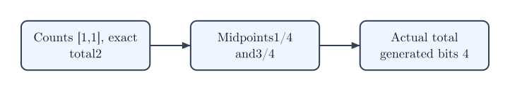
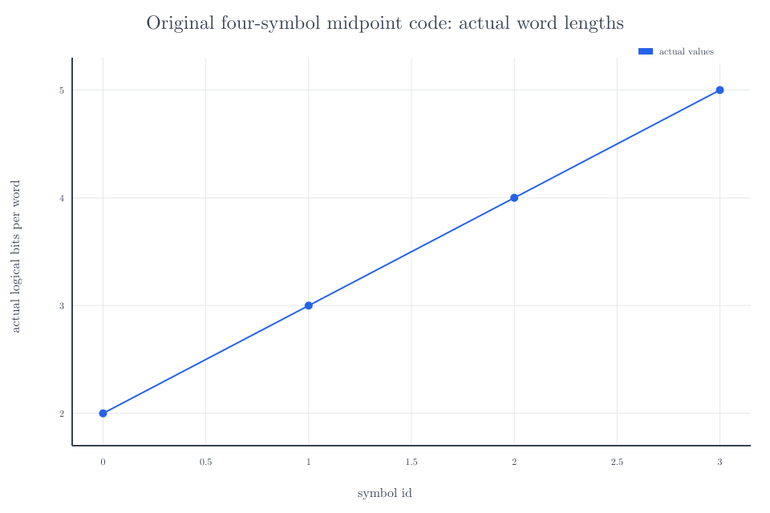
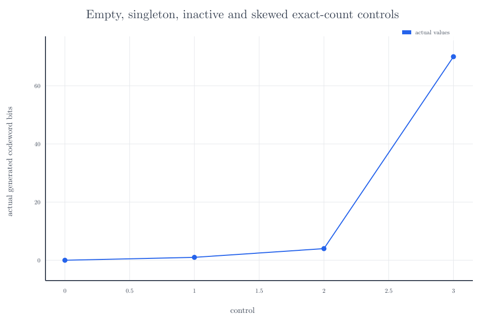
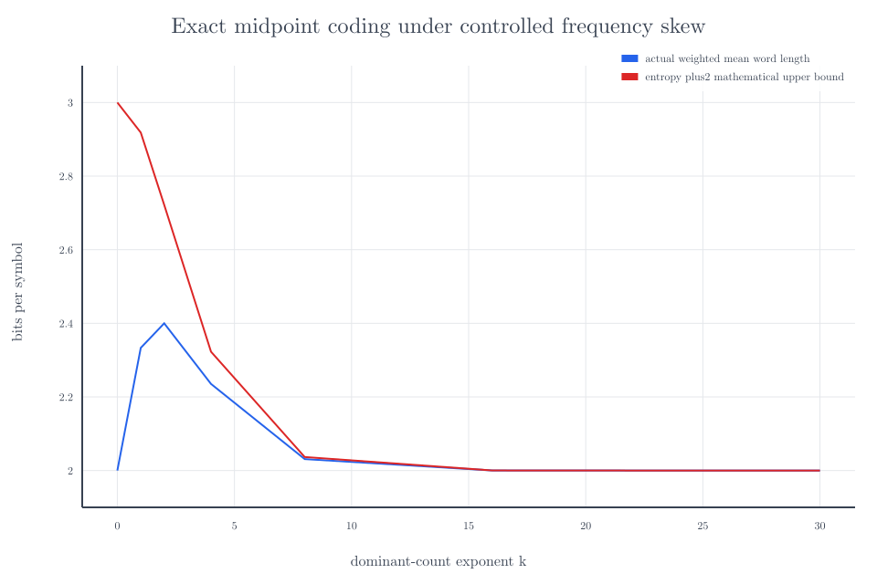

Shannon–Fano–Elias: exact midpoint words and complete payload decoding
Abstract
Construct a static prefix code directly from cumulative integer symbol frequencies. Native midpoint words precede the original frequency vector[10,5,3,2] and ten-symbol message; actual emitted spans verify the complete round trip.
Mechanism and mathematical scope
For symbol frequency f, preceding count c and total T, use the first L=ceil(log2(T/f))+1 binary digits of (2c+f)/(2T). Each dyadic code interval lies inside its symbol probability interval, so the words are prefix-free. Positive-symbol lengths satisfy log2(1/p)+1<=L<log2(1/p)+2, yielding average length below H+2. Integer doubling determines L; unsigned128 long division generates actual bits without floating boundary decisions. Zero-frequency symbols are inactive. The native decoder must consume every supplied bit and return exactly the requested number of complete words.
A tiny actual producing history
The table and native concept diagram read the same producing execution. Every block below is a complete editable C++ program.
#include <dm/dm.hpp>
int main() {
namespace a = dm::algorithms;
namespace g = dm::graphics;
std::filesystem::create_directories("build");
auto r = a::shannon_fano_elias_trace({1, 1});
std::print("| symbol | actual prior count | frequency | actual length | actual bool word |\n| ---: | " "---: | ---: | ---: | --- |\n");
for (const auto &s : r.words)
std::print("| {} | {} | {} | {} | `{}` |\n", s.symbol, s.cumulative,
s.frequency, s.length, s.bits);
g::Diagram concept_diagram(48, 1100);
concept_diagram.node("n0", {0, 0}, "Counts [1,1], exact total2");
concept_diagram.node("n1", {5, 0}, "Midpoints1/4 and3/4");
concept_diagram.node("n2", {10, 0},
std::format("Actual total generated bits {}",
r.emitted_bits));
concept_diagram.edge("n0", "n1").edge("n1", "n2");
concept_diagram.save_svg("build/shannon_fano_elias_tiny.svg");
}| symbol | actual prior count | frequency | actual length | actual bool word |
|---|---|---|---|---|
| 0 | 0 | 1 | 2 | [false, true] |
| 1 | 1 | 1 | 2 | [true, true] |

The retained original experiment
#include <dm/dm.hpp>
int main() {
namespace a = dm::algorithms;
namespace g = dm::graphics;
std::filesystem::create_directories("build");
const std::vector<std::uint32_t> f{10, 5, 3, 2};
const std::vector<int> message{0, 0, 1, 0, 2, 0, 1, 3, 0, 2};
auto book = a::shannon_fano_elias_trace(f);
auto r = a::shannon_fano_elias_encode_trace(message, f);
auto d = a::shannon_fano_elias_decode_trace(r.bits, f, message.size());
std::print("Actual message `{}`, decoded `{}`, round-trip {}.\nActual logical bits {}, model entropy " "{}, model average code length {}.\n\n| original symbol | actual frequency | actual word " "length | actual emitted word |\n| ---: | ---: | ---: | --- |\n",
message, d.symbols, message == d.symbols, r.bits.size(),
book.entropy, book.average_bits);
std::vector<double> x, y;
for (const auto &w : book.words) {
std::print("| {} | {} | {} | `{}` |\n", w.symbol, w.frequency, w.length,
w.bits);
x.push_back(w.symbol);
y.push_back(w.length);
}
if (message != d.symbols)
return 1;
auto plot = g::RPlot::create();
plot.lines(x, y, "actual values", {37, 99, 235}).points(x, y, {37, 99, 235},
5).title(
"Original four-symbol midpoint code: actual word lengths").x_label(
"symbol id").y_label("actual logical bits per word");
plot.save_svg("build/shannon_fano_elias_original.svg");
}Actual message [0, 0, 1, 0, 2, 0, 1, 3, 0, 2], decoded [0, 0, 1, 0, 2, 0, 1, 3, 0, 2], round-trip true.
Actual logical bits 29, model entropy 1.7427376486136672, model average code length 2.85.
| original symbol | actual frequency | actual word length | actual emitted word |
|---|---|---|---|
| 0 | 10 | 2 | [false, true] |
| 1 | 5 | 3 | [true, false, true] |
| 2 | 3 | 4 | [true, true, false, true] |
| 3 | 2 | 5 | [true, true, true, true, false] |

Explicit controls
#include <dm/dm.hpp>
int main() {
namespace a = dm::algorithms;
namespace g = dm::graphics;
std::filesystem::create_directories("build");
std::vector<double> x, y;
std::print("| control | actual active words | actual generated bits |\n| ---: | ---: | ---: |\n");
const std::vector<std::vector<std::uint32_t>> models{{}, {1}, {0, 1, 0, 1},
{4294967295u, 1, 1}};
for (std::size_t i = 0; i < models.size(); ++i) {
auto r = a::shannon_fano_elias_trace(models[i]);
std::print("| {} | {} | {} |\n", i, r.words.size(), r.emitted_bits);
x.push_back(i);
y.push_back(r.emitted_bits);
}
bool truncated = false, extra = false;
try {
a::shannon_fano_elias_decode({false}, {1, 1}, 1);
} catch (const std::invalid_argument &) {
truncated = true;
}
try {
a::shannon_fano_elias_decode({false, true, true, true}, {1, 1}, 1);
} catch (const std::invalid_argument &) {
extra = true;
}
std::print("Truncated word rejected {}; extra complete word rejected {}.\n",
truncated, extra);
if (!truncated || !extra)
return 1;
auto plot = g::RPlot::create();
plot.lines(x, y, "actual values", {37, 99, 235}).points(x, y, {37, 99, 235},
5).title(
"Empty, singleton, inactive and skewed exact-count controls").x_label(
"control").y_label("actual generated codeword bits");
plot.save_svg("build/shannon_fano_elias_controls.svg");
}| control | actual active words | actual generated bits |
|---|---|---|
| 0 | 0 | 0 |
| 1 | 1 | 1 |
| 2 | 2 | 4 |
| 3 | 3 | 70 |
Truncated word rejected true; extra complete word rejected true.

Actual selected work and sensitivity
#include <dm/dm.hpp>
int main() {
namespace a = dm::algorithms;
namespace g = dm::graphics;
std::filesystem::create_directories("build");
std::vector<double> x, average, bound;
std::print("| dominant frequency2^k | actual entropy | actual mean word bits | entropy plus2 reference " "|\n| ---: | ---: | ---: | ---: |\n");
for (unsigned k : {0, 1, 2, 4, 8, 16, 24, 30}) {
auto r = a::shannon_fano_elias_run({1, std::uint32_t{1} << k});
std::print("| {} | {} | {} | {} |\n", k, r.entropy, r.average_bits,
r.entropy + 2);
x.push_back(k);
average.push_back(r.average_bits);
bound.push_back(r.entropy + 2);
}
auto plot = g::RPlot::create();
plot.lines(x, average, "actual weighted mean word length", {37, 99, 235}).lines(x, bound, "entropy plus2 mathematical upper bound", {220, 38, 38}).title("Exact midpoint coding under controlled frequency skew").x_label("dominant-count exponent k").y_label("bits per symbol");
plot.save_svg("build/shannon_fano_elias_work.svg");
}| dominant frequency2^k | actual entropy | actual mean word bits | entropy plus2 reference |
|---|---|---|---|
| 0 | 1 | 2 | 3 |
| 1 | 0.9182958340544896 | 2.3333333333333335 | 2.9182958340544896 |
| 2 | 0.7219280948873623 | 2.4 | 2.721928094887362 |
| 4 | 0.32275695889739825 | 2.235294117647059 | 2.3227569588973984 |
| 8 | 0.03675295386313881 | 2.0311284046692606 | 2.0367529538631386 |
| 16 | 0.00026615051112688457 | 2.0002441368997665 | 2.000266150511127 |
| 24 | 1.5165027122129148e-06 | 2.0000014305113893 | 2.0000015165027123 |
| 30 | 2.9283291671683527e-08 | 2.0000000279396772 | 2.000000029283292 |

API and interpretation
Logical vector<bool> bits are not a portable compressed file format or storage byte count. The static frequency model and original count must be supplied separately. Inactive zero-count ids cannot appear in a message. The exact integer model corrects floating midpoint/length boundary errors; decoder failures remain failures rather than partial recovered messages.
Reusable producers, fixtures and histories live in the canonical C++ library. Captured records own their values and do not come from a separate report replay. Selected counters and record/scalar policies are specified at their API boundaries; they are not peak-byte or wall-time budgets. Synthetic structural inputs are controlled fixtures for these mechanisms.
References
Verification: 126 scoped native cases;21 directly instrumented ASan/UBSan
cases;124 executable public examples;492/492 full-file definitions and10 exact
Sfc64 members;10 hovers;1588 independent records/14377 checks;frozen comparisons
across all ten families with endpoint/full-width field corrections recorded;17
checkout/installed standalone headers and linked/umbrella consumers;40 executed
programs and40 inspected figures with both exports. The complete
original4000-step native tensor SOM trajectory agrees with an independent NumPy
replay, including every winner and final assignment. Receipts:
build/mepml-conversion/batch-344-353/.